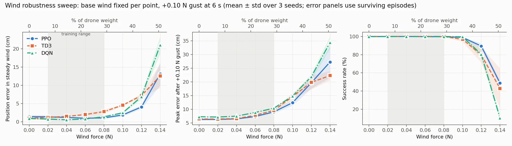

强化学习无人机抗风悬停
在 Isaac Lab 里给四旋翼加风和阵风，让策略直接输出四个电机的转速，把飞机稳在目标点。2025 年做的第一版里，三种算法其实不在同一个环境里训练，评估指标也有问题。2026 年我统一了环境和评估标准，把 PPO、TD3、DQN 重新跑了一遍。
- 时间
- 2025 首版，2026 重跑
- 技术栈
- Isaac Sim 4.5 · Isaac Lab 2.1 · PyTorch · PPO · TD3 · DQN
- 环境
- Crazyflie 四旋翼，1024 架 GPU 并行，水平风加随机阵风，目标点 (0, 0, 1) 米
- 我做的
- 风扰环境、推力标定、状态与奖励设计，三种算法的训练、调参和统一评估
- 结果
- 训练风力范围内三种算法悬停成功率都在 99.7% 以上。阵风下 PPO 偏离最小、恢复最快（0.54 秒，比 DQN 快 14%）；风力超出训练范围时 PPO 掉得最慢。稳态误差 DQN 最小。
- 评估
- 3 种算法 × 3 个训练种子 × 5000 万步，每个模型 512 个回合，固定评估种子
复查第一版
第一版的结论是“PPO 比 DQN 位置误差低 42%、恢复时间短 35%”。回头读代码时发现这个对比站不住：
- 不是同一个环境。DQN 只有 9 维状态、没有风；TD3 用的是另一套奖励；只有 PPO 在有风的环境里训练。
- “恢复时间”其实是回合时长。它按步数乘 0.01 秒计算，最长 3 秒，和受扰后多久回到目标点无关。
- 物理参数不对。推力系数过大，电机最低转速时推力也有机重的 3.4 倍；风力加在机体坐标系里，会跟着飞机一起转；没有旋翼反扭矩，偏航不可控。
所以这次不在旧代码上修补，而是重写了一套三种算法共用的训练和评估管线，旧数字全部作废。
统一的风扰环境
环境基于 Isaac Lab 的 Crazyflie 模型，机重 0.277 N，物理 100 Hz、策略 50 Hz，1024 架在 GPU 上并行。推力系数重新标定，四个电机都在 5000 RPM 时正好悬停；每个旋翼加上反扭矩，偏航变得可控。
风固定在世界坐标系里水平吹：每回合随机抽 0.02–0.08 N 的基础风（机重的 7–29%）和风向，每秒小幅波动一次；训练时再随机叠加 0.03–0.10 N 的短时阵风。第一次试训没加阵风，评估时一个 +0.15 N 的阵风就让 98% 的回合坠机。
- 每回合随机基础风力和风向
- 飞行中风力波动，随机阵风
- 目标稳定悬停在 (0, 0, 1) 米
状态、动作与奖励
状态是 18 维，全部换成机体坐标系下的量：位置、目标位置、机体系重力方向、机体系线速度、角速度和位置误差，各 3 维。第一版用欧拉角，初始偏航随机后 ±π 处会跳变；改成重力方向后，试训中 PPO 的坠机率从 15% 降到 0.2%。
PPO 和 TD3 输出 4 维连续动作，映射到每个电机 4500–5500 RPM。DQN 需要离散动作，每个电机取 4500、5000、5500 三档，共 81 种组合。三种算法共用同一个奖励：靠近目标点得分，再扣掉线速度和角速度的平方项，让飞机不只追位置，还要稳。
- 状态18 维机体系位置、姿态和速度
- 策略PPO、TD3 或 DQN
- 动作4 个电机的转速
训练与调参
每种算法预算相同：5000 万步、3 个训练种子，评估的是训练结束时的最终策略，不挑最好的存档。
DQN 最难训。照搬 TD3 的更新频率和学习率，大约 800 万步时 Q 值发散；降低更新比例、加 3 步回报后能学到 6 cm 误差，但 1100 万步左右又崩了。最后改成 Double DQN、学习率 1e-4、目标网络软更新系数 0.001，三个种子都稳定训练到 5000 万步。

结果
评估时每个回合 12 秒：前 6 秒是训练范围内的随机基础风，第 6 秒从随机方向加一个 0.10 N、持续 0.5 秒的阵风。恢复时间从阵风开始算，到误差回到 5 cm 以内并保持 0.5 秒为止。
- 阵风峰值误差
- PPO 7.1 cm · TD3 7.5 cm · DQN 8.4 cm
- 恢复时间
- PPO 0.54 s · TD3 0.62 s · DQN 0.63 s
- 稳态位置误差
- DQN 0.80 cm · PPO 1.13 cm · TD3 1.84 cm
- 悬停成功率
- PPO 99.7% · TD3 100% · DQN 100%
三种算法在训练范围内都能稳住。区别在扰动：PPO 的阵风峰值误差比 DQN 低 16%，恢复快 14%。DQN 的稳态误差反而最小，因为它的三档开关式控制训练好后会在目标点附近非常小幅地来回抖动；TD3 最保守，没有坠机，但稳态误差最大。
超出训练范围的风
把基础风固定在不同大小，从 0 一直加到 0.14 N（机重的 51%，训练时最大只到 0.08 N），同样在第 6 秒加阵风。
- PPO
- 49%
- TD3
- 43%
- DQN
- 10%


0.10 N 以内三者都在 97% 以上；到 0.12 N，PPO 还有 89.5%，TD3 和 DQN 约 80%；0.14 N 时 DQN 只剩 10%。离散动作在强风下余量不够，是 DQN 掉得快的主要原因。
局限
- 只在仿真里。风被简化成作用在机身质心的水平外力，没有桨叶气动和地面效应，也还没有上实机。
- 风力上限受推力限制。电机推力最多是机重的 1.21 倍，能顶住的水平力约 0.19 N，所以风力是几十毫牛的量级。
- DQN 的动作是粗离散的。每个电机只有三档，换成更细的离散化或者分支式 Q 网络，结论可能会变。